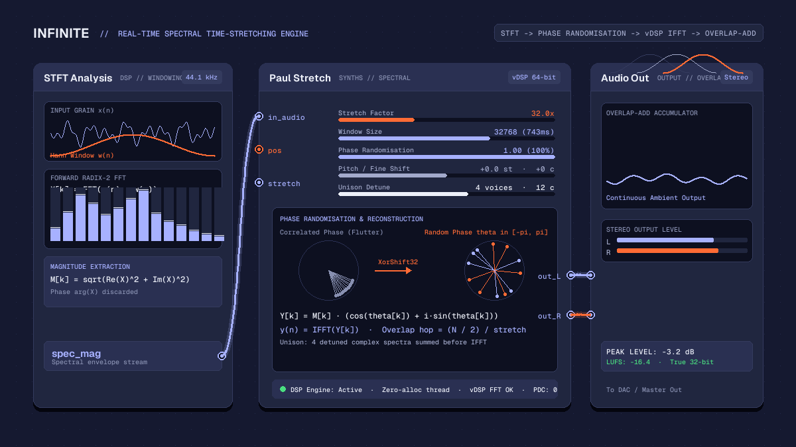

Creative
PaulStretch on Mac: extreme spectral time stretching in Infinite
Explore PaulStretch on Mac with Infinite. Discover how real-time spectral time stretching, phase randomisation, and FFT analysis transform audio into ambient drones.

on this page

Finding a reliable version of paulstretch free mac users can run on modern Apple Silicon hardware has historically proved difficult. The original PaulStretch application created by Nasca Octavian Paul became an essential tool for sound designers, film composers, and electronic producers aiming to turn everyday field recordings and acoustic phrases into infinite, luminous drone textures. However, because the legacy standalone software was compiled as a 32-bit binary, newer versions of macOS can no longer run it without third-party audio editor plug-ins or terminal emulators.
In Infinite, extreme spectral time stretching is implemented as a first-class native node: the Paul Stretch node. Built from scratch with 64-bit precision, hardware-accelerated Apple vDSP fast Fourier transforms, and full real-time modulation on the canvas, it brings the iconic PaulStretch algorithm into a responsive audiovisual environment.
This article walks through the mathematics of spectral time stretching, explains how phase randomisation prevents flutter, explores the internal architecture of the Paul Stretch node in Infinite, and outlines practical patching techniques for ambient music production.
Why time-domain stretching fails at extreme ratios
Standard digital audio workstations rely on time-domain techniques for tempo manipulation. Algorithms such as waveform similarity overlap-add (WSOLA) or granular pitch shifting slice an incoming audio buffer into tiny grains, repeating or dropping fragments to stretch duration without shifting pitch.
While these time-domain algorithms work well for modest tempo adjustments of five or ten percent, they disintegrate when stretched by factors of 10x, 50x, or 1000x:
- Transient flutter: Grains repeated thousands of times produce rapid comb filtering and an artificial buzzing sound.
- Phase cancellation: Splicing non-continuous waveforms results in phase interference across mid and high frequencies.
- Discontinuous harmonics: Long sustained tones lose their acoustic coherence, turning orchestral chords into static chatter.
To achieve genuine ambient expansion, where a four-second piano chord blooms into a lush twenty-minute harmonic cloud, the processing must take place entirely within the frequency domain.
The mathematics of the PaulStretch algorithm
The PaulStretch algorithm solves the extreme duration problem through Short-Time Fourier Transform (STFT) analysis, complete phase randomisation, and overlap-add synthesis.
1. Windowing and the forward transform
The algorithm extracts overlapping segments of audio from a source buffer. Each segment is multiplied by a symmetrical Hann window function:
w(n) = 0.5 * (1.0 - cos(2.0 * pi * n / (N - 1)))Here, N represents the window length in samples. The windowed segment is then transformed into complex frequency bins using the forward fast Fourier transform (FFT):
X[k] = FFT(x(n) * w(n))Each bin X[k] contains a real component and an imaginary component, encoding the amplitude and phase of that specific frequency band.
2. Spectral magnitude extraction and phase randomisation
In conventional phase vocoders, the algorithm must track and calculate the exact phase progression across consecutive frames to preserve pitch. When audio is stretched by 100x or 800x, phase tracking accumulates floating-point errors, creating hollow, metallic ringing.
Paul Nasca discovered that for extreme ambient textures, the exact temporal phase relationship of individual partials is largely irrelevant to the human ear. What matters is the spectral envelope: the distribution of energy across frequency bins.
The algorithm extracts the magnitude of each frequency bin:
M[k] = sqrt(real(X[k])^2 + imag(X[k])^2)The original phase information is discarded entirely. In its place, the synthesiser assigns a fresh, uniformly distributed random phase angle between -pi and +pi:
theta[k] = uniform_random(-pi, +pi)By reconstructing the complex spectrum from the original magnitude and the random phase angle:
Y[k] = M[k] * (cos(theta[k]) + i * sin(theta[k]))the algorithm diffuses temporal transients into continuous acoustic energy. Attack transients such as drum strikes, vocal plosives, and string plucks are smeared evenly across the duration of the analysis window, transforming percussive impacts into warm, diffuse spectral pads.
3. Inverse transform and overlap-add accumulation
The modified spectrum Y[k] is converted back into the time domain using the inverse FFT (IFFT):
y(n) = IFFT(Y[k])The resulting time-domain block is windowed a second time by the Hann curve and accumulated into an overlap-add output buffer. The playback pointer steps forward through the source sample by a hop size determined by the chosen stretch factor:
hop_size = (window_size / 2) / stretch_factorWhen stretch_factor is set to 100.0, the hop size becomes tiny, allowing the synthesiser to continuously re-analyse and diffuse virtually identical slices of the source audio over extended periods of time.
Inside the Paul Stretch node in Infinite
In Infinite, the Paul Stretch node (src/nodes/PaulStretchNode.cpp) is engineered for low-latency live performance and audio thread reliability.
Zero allocation audio thread
Standard implementations often allocate memory buffers dynamically when changing window sizes or loading audio files. In Infinite, the node preallocates all necessary arrays during the initialization phase:
- On macOS, the node allocates an optimised Apple vDSP FFT setup (
vDSP_create_fftsetup) using radix-2 acceleration. - On Linux and Windows, it employs Infinite's portable FFT library (
PortableFft.h), maintaining identical bit-level spectral parity across operating systems. - Work arrays for split complex storage (
mSplitReal,mSplitImag), magnitude calculation, and overlap-add ring buffers are allocated ahead of time. - Phase angles are generated using an inlined, lock-free XorShift32 pseudorandom number generator, executing in nanoseconds per bin without thread contention.
Discrete window size selection
The node offers seven discrete power-of-two window sizes:
| Index | Window size (samples) | Duration at 44.1 kHz | Musical character |
|---|---|---|---|
| 0 | 2048 | 46 ms | Fast response, subtle granular texture |
| 1 | 4096 | 93 ms | Crisp harmonic definition |
| 2 | 8192 | 186 ms | Balanced vocal and melodic expansion |
| 3 | 16384 | 372 ms | Classic PaulStretch pad density |
| 4 | 32768 | 743 ms | Deep orchestral and choral wash (default) |
| 5 | 65536 | 1.49 s | Immense ambient decay, crystalline partials |
| 6 | 131072 | 2.97 s | Monolithic drones, near-stationary spectra |
Selecting an appropriate window size involves balancing time resolution against frequency resolution. Shorter windows (such as 4096 samples) track chord progressions and pitch changes with minimal lag, but retain slight granular flutter. Longer windows (such as 65536 samples) resolve individual low-frequency harmonics with microscopic precision, yielding smooth, glassy textures where individual note transitions blend like watercolours.
Real-time modulation and frequency transformation
Unlike traditional offline tools where you render a stretched file to disk and re-import it into your session, Infinite's Paul Stretch node runs continuously on the audio canvas. Every parameter can be controlled in real time using cables from modulators, LFOs, and MIDI sources.
Spectral pitch shifting and fine tuning
The node provides dedicated pitch transposition:
pitch: Transposes the spectrum up or down by plus or minus 24 semitones.fine: Fine-tunes the transposition by plus or minus 100 cents.
Because transposition occurs by scaling spectral bin indices during frequency reconstruction rather than altering playback speed, changing pitch does not alter the playback duration or the stretch ratio.
Linear frequency shifting
In addition to musical pitch shifting, the node features a linear shift control ranging from -1000 Hz to +1000 Hz. Adding a constant frequency offset to all harmonics destroys harmonic integer ratios, yielding metallic, bell-like inharmonic resonances reminiscent of ring modulation.
Unison detuning in the frequency domain
For expansive stereo imaging, the node includes a unison control supporting up to 8 voices with a modulatable detune spread (0 to 50 cents).
Instead of running multiple redundant FFT instances across parallel audio threads, Infinite calculates unison layering directly in the frequency domain. Additional voice spectra are derived and accumulated into complex accumulator buffers before executing the inverse FFT, delivering wide, chorused drone textures with minimal processor load.
Live sampling via the record pin
The Paul Stretch node includes an audio input pin labeled slot 0 (record in). Sound designers can route any audio source: such as an acoustic microphone input, a drum machine, or the output of an Analog synthesiser: directly into the node.
Triggering the record control captures up to 30 seconds of live sound into an internal circular buffer. Once recorded, the playhead begins scrubbing and stretching the freshly captured material immediately, turning fleeting acoustic gestures into permanent ambient soundscapes.
Building an ambient sound design patch
To experience the musical depth of spectral time stretching, construct this foundational patch in Infinite:
[ Sample / Live Mic ] ---> [ Paul Stretch ] ---> [ Delay ] ---> [ Reverb ] ---> [ Audio Out ]
^ ^
| |
[ LFO ] [ Random ]- Load a source sample: Drop an acoustic guitar phrase, vocal harmony, or piano chord into the
Paul Stretchnode. - Configure the stretch factor: Set
stretchto32.0and select window size32768 (743ms). - Add playhead modulation: Connect a slow sinusoidal
LFOnode (running at 0.02 Hz) to theposinput pin. This gently sweeps the analysis point back and forth across the recording, ensuring the timbre continually shifts. - Modulate the texture: Connect a subtle
Randommodulator to thedetunepin to introduce gentle microtonal drifting. - Spatial finishing: Cable the stereo outputs of
Paul Stretchthrough a stereoDelayand an algorithmicReverbnode before connecting toAudio Out.
To examine more advanced configurations featuring polyphonic modulators and frequency analysis, explore the downloadable project templates in the Infinite Library.
Headless automation and batch processing
Because Infinite features a comprehensive command-line interface, you can automate spectral sound design pipelines without opening the graphical interface.
You can save your patch as a .inf document, modify sample paths or stretch parameters programmatically using Python or the terminal, and render pristine 24-bit audio files to disk. For detailed instructions on headless rendering and scripting, consult our guide on how to render video and audio from a text file.
Furthermore, if you are synchronising visuals with your stretched audio, you can route the output of Paul Stretch into an Audio Analyze node to extract frequency bands, subsequently driving real-time GPU graphics as described in our tutorial on audio-reactive GLSL shaders.
Summary
The PaulStretch algorithm remains one of the most expressive audio processing techniques ever conceived for ambient music and experimental sound design. By implementing this iconic process natively in 64-bit C++ with hardware-accelerated FFTs, Infinite gives musicians on macOS, Windows, and Linux instant access to extreme spectral time stretching on an open, modular canvas.
Download Infinite from the homepage to explore the Paul Stretch node and begin creating your own evolving drone environments.